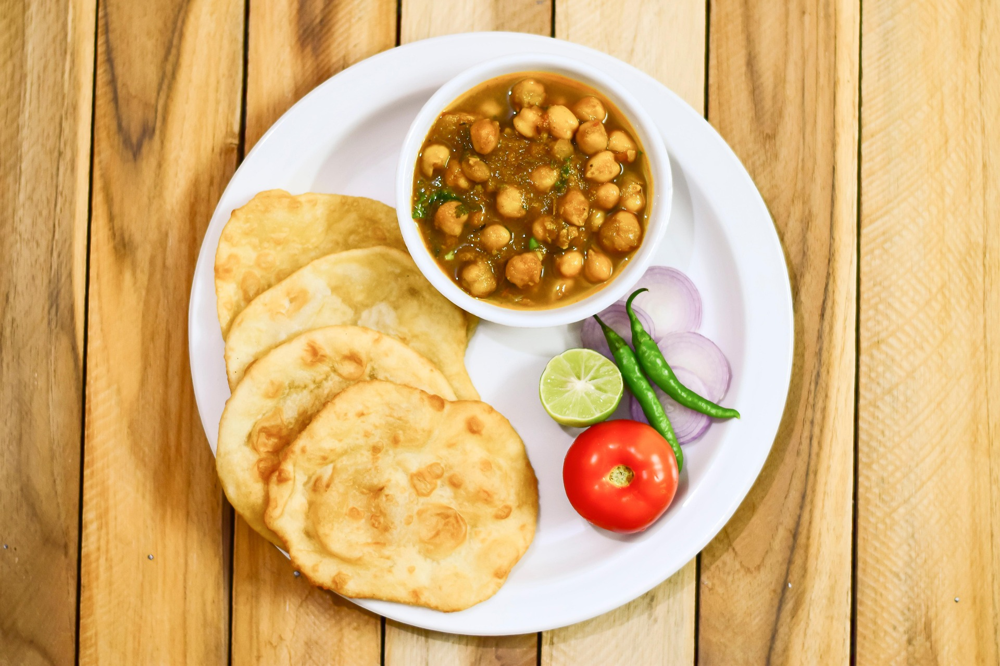

Chana Masala is a popular, tangy North Indian chickpea curry featuring soft-cooked chickpeas (chana) simmered in a robust, spiced onion-tomato gravy. A staple in Punjabi cuisine, this vegan dish is known for its bold, aromatic flavors, utilizing ingredients like cumin, coriander, turmeric, and tangy dried mango powder (amchoor)
Chana masala is a popular North Indian curry made with chickpeas (chole) in a spiced onion-tomato gravy. Key ingredients include chickpeas, onions, tomatoes, ginger-garlic paste, green chilies, and essential spices like coriander, cumin, turmeric, red chili, garam masala, and dried mango powder (amchur) for tanginess.